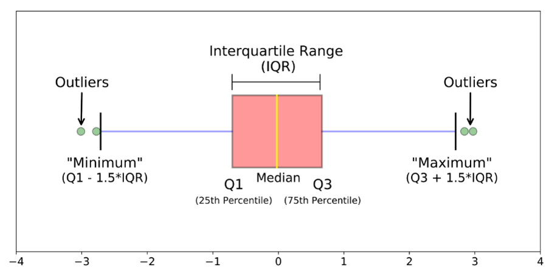

数据可视化
作者:
MingXiao
2024/07/12
2.1 一般建议
看变化趋势：lineplot
看分布特征：boxplot，scatterplot，直方图，pdf
看关系：回归线，scatterplot+回归线，热图
plt.subplot(2, 2)用于生成一个2\(\times\)2的画布,可以存放四张图
2.2 箱体图认读
箱体图认读：

Q1,Median,Q3分别表示25，50，75分位点（非均值）
Minimum=Q1-1.5 * IQR，Maximum=Q3+1.5 * IQR
IQR=Q3-Q1（箱体长度）